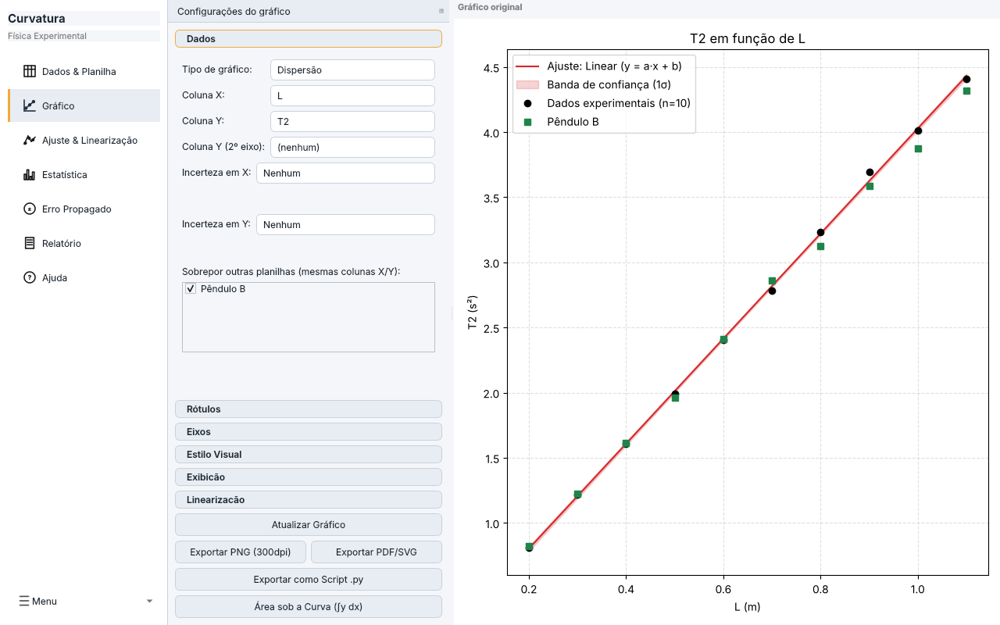
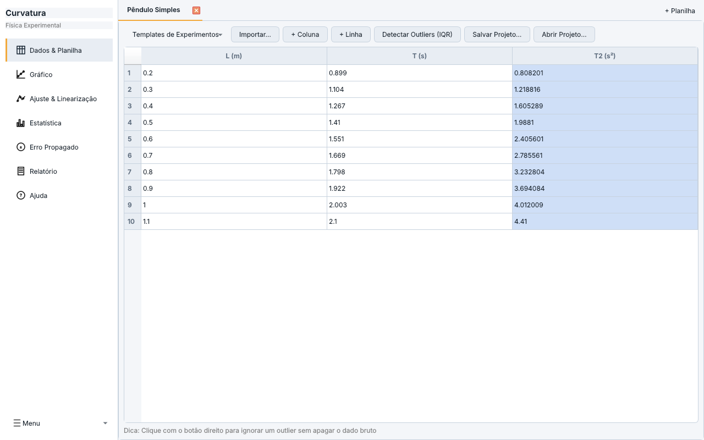
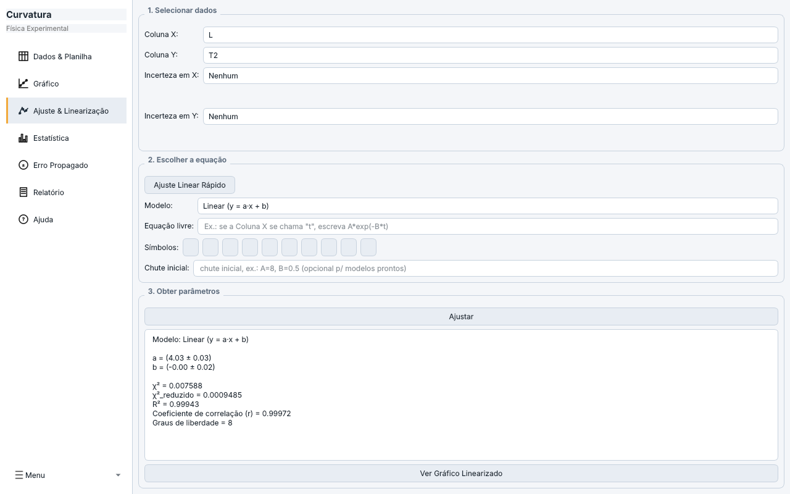
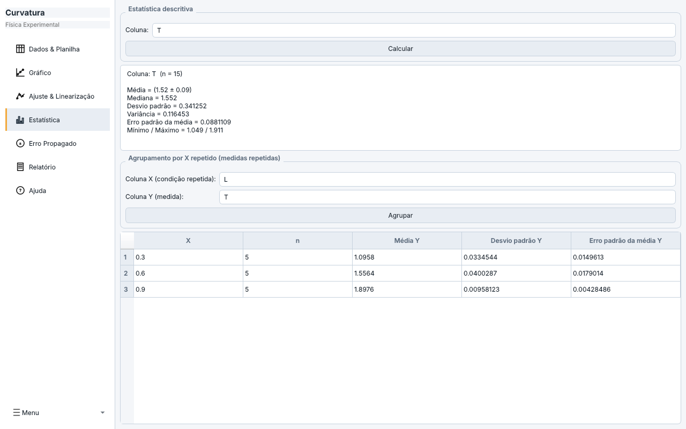
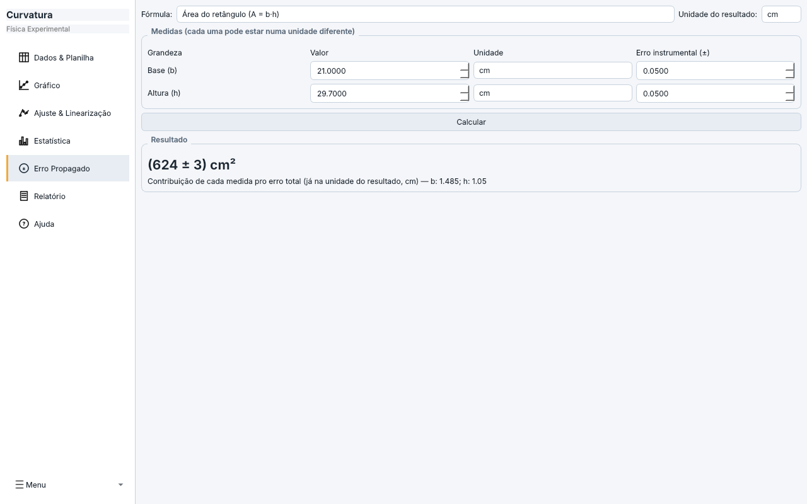
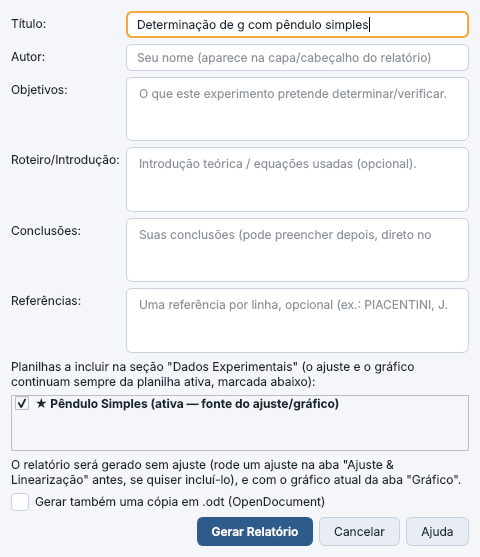
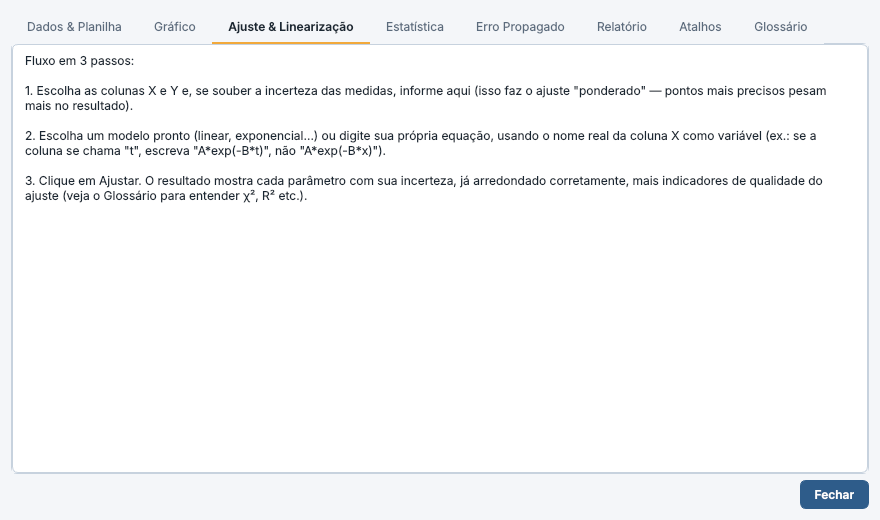
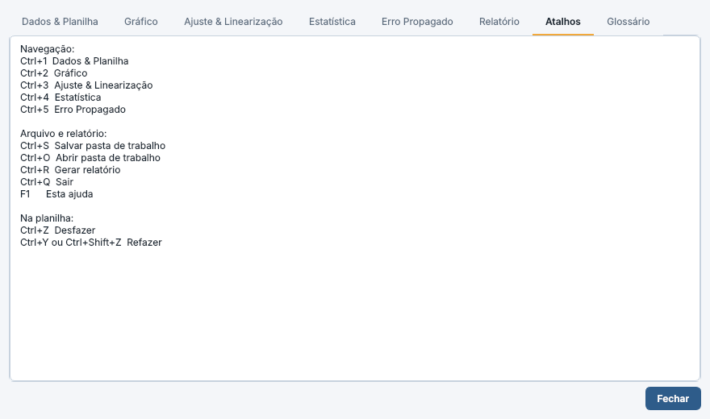
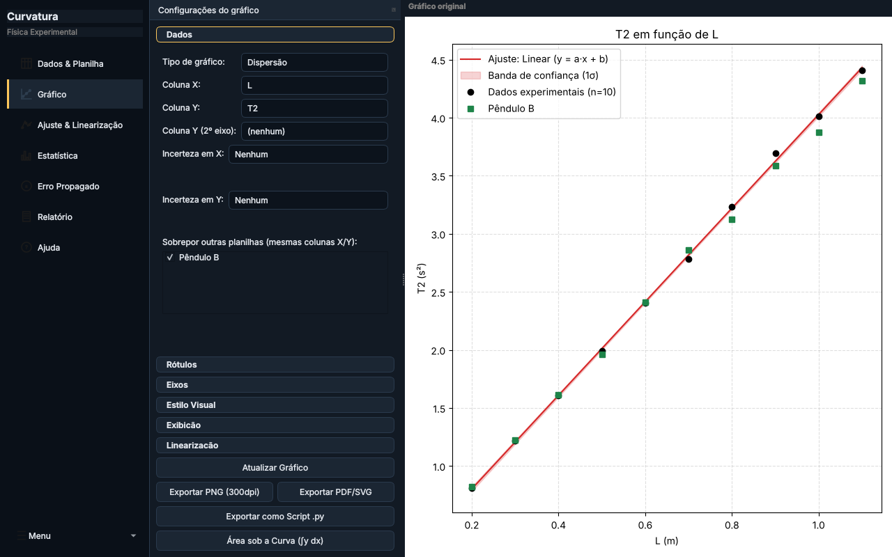

Ajuste de curvas para o laboratório de Física
Curvatura leva o aluno da planilha de medidas ao relatório em formato ABNT sem trocar de programa: gráfico, ajuste com incertezas, propagação de erro e documento final no mesmo lugar.

Para que serve
Na disciplina de Física Experimental, o aluno costuma passar por três ferramentas: papel milimetrado para linearizar, uma planilha para as contas e um editor de texto para o relatório. Cada troca é uma chance de errar um arredondamento ou de perder a ligação entre o dado e o resultado.
O Curvatura foi pensado como alternativa livre e leve a programas como o Origin, com o vocabulário da disciplina: incerteza de instrumento, algarismos significativos, χ² reduzido, linearização. Um clique em um experimento comum, como pêndulo ou queda livre, já cria as colunas certas e sugere o modelo de ajuste.
Do dado ao relatório
- Digitar ou importarPlanilha própria ou arquivo CSV, TXT e XLSX. Um template cria as colunas do experimento.
- Olhar o gráficoPontos com barras de erro, escala logarítmica, vários experimentos sobrepostos.
- Ajustar um modeloParâmetros com incerteza, qualidade do ajuste e gráfico linearizado.
- Gerar o relatórioDocumento .docx em formato ABNT com dados, ajuste e gráfico.
Planilha com templates e colunas calculadas
Cada planilha guarda um experimento, em abas internas. A pasta de trabalho inteira é salva num único arquivo.
- 11 templates de experimentos: cinemática, trilho de ar, queda livre, atenuação de radiação gama, lei de Hooke, lente delgada, pêndulo simples, decaimento, ondulatória, curva I-V de diodo e espectrofotometria.
- Colunas calculadas por fórmula (por exemplo
T**2) que se atualizam sozinhas quando o dado muda, inclusive a partir de colunas de outra planilha. - Ponto duvidoso? Marcar como outlier tira o ponto das contas sem apagar a medida original. A detecção por IQR só sugere e pede confirmação.
- Desfazer e refazer com Ctrl+Z e Ctrl+Y.

Gráficos prontos para o relatório
- Dispersão, linha, histograma e boxplot, com duplo eixo Y quando duas grandezas têm unidades diferentes.
- Barras de erro fixas, percentuais, vindas de uma coluna ou assimétricas.
- Sobreposição de outras planilhas no mesmo eixo, para comparar duas montagens ou duas turmas (Figura 1).
- Escala logarítmica, resíduos e área sob a curva por integração numérica.
- Exportação em PNG (300 dpi), PDF, SVG e como script Python independente, para reabrir o gráfico anos depois sem o programa.
O menu também gera papel milimetrado, monolog e di-log em PDF A4, para as atividades de linearização feitas à mão.
Ajuste com incertezas
Modelos linear, quadrático, lei de potência e exponencial, ou uma equação livre escrita com o nome real das colunas. Quando o aluno informa a incerteza das medidas, o ajuste é ponderado: pontos mais precisos pesam mais.
O resultado traz cada parâmetro com sua incerteza já arredondada pela regra do laboratório (erro com um algarismo significativo), além de χ², χ² reduzido, R², coeficiente de correlação e graus de liberdade.

Estatística de medidas repetidas
Para quem mediu a mesma coisa várias vezes, o programa calcula média com erro padrão, mediana, desvio padrão e variância. O agrupamento por X repetido junta as repetições de cada condição, para que elas virem um ponto com barra de erro e não vários pontos soltos.

Propagação de erro em contas pontuais
Nem toda atividade tem uma curva. Para área e volume a partir de medidas de régua ou paquímetro, a calculadora recebe cada medida com seu erro instrumental, converte as unidades (base em dm, altura em mm, por exemplo) e entrega o resultado arredondado como o laboratório pede. Abaixo do resultado, mostra quanto cada medida pesou no erro final, o que indica qual instrumento vale a pena refazer.
Fórmulas prontas: área do retângulo, área do círculo, volume do cilindro e volume do paralelepípedo.

Relatório em formato ABNT
Com título, autor, objetivos, roteiro, conclusões e referências preenchidos, o programa monta o documento .docx com os dados, o último ajuste e o gráfico atual. Se a pasta de trabalho tem várias planilhas, o aluno escolhe quais entram. Quando duas planilhas receberam ajuste, o relatório ganha uma seção que compara os parâmetros e marca com ✓ ou ✗ se são compatíveis dentro do erro combinado.
Há também a opção de salvar uma cópia em .odt, que depende do LibreOffice instalado.

Feito para quem está começando
Cada tela tem um guia curto e o programa traz um glossário com os termos que aparecem nos resultados: χ², R², erro padrão, banda de confiança, graus de liberdade. A ajuda abre na seção da tela em que o aluno está (F1). Os botões têm dicas ao passar o mouse, e há atalhos de teclado para tudo o que se repete.


Confiabilidade
- Salvamento automático
- Versões periódicas da pasta de trabalho, com opção de recuperar uma versão anterior.
- Desfazer e refazer
- Edição de célula, coluna, linha, outlier, importação e template podem ser desfeitos.
- Registro de erros
- Falhas inesperadas ficam gravadas em arquivo de log, para diagnóstico.
- Testes automatizados
- 198 testes cobrem cálculo, ajuste, relatório e partes da interface. Nenhum item é dado como pronto sem teste com dados reais.
- Quatro temas
- Sistema, claro, escuro e alto contraste, com cores de célula calculadas para manter a leitura em qualquer um.
- Funciona offline
- Roda localmente, sem conta e sem enviar dados para a internet.

Estado do projeto
Em desenvolvimento ativo, distribuído como AppImage para Linux e executável .exe para Windows. O desenvolvimento segue um roteiro de oito fases; as de temas, relatório, linearização, multiplanilha e leitura gráfica estão concluídas, e as de ajuda embutida, robustez técnica e fechamento estão em andamento.
O que falta para a ajuda embutida é testar com alunos que nunca usaram o programa. Esse é o ponto em que a opinião da coordenação e de quem leciona a disciplina mais ajudaria.